Working With Custom Content Types in Alfresco¶
Jeff Potts, Metaversant Group — July, 2021
License¶

This work is licensed under the Creative Commons Attribution-ShareAlike 3.0 Unported License. To view a copy of this license, visit http://creativecommons.org/licenses/by-sa/3.0/ or send a letter to Creative Commons, 444 Castro Street, Suite 900, Mountain View, California, 94041, USA.
Introduction¶
Alfresco is a flexible platform for developing content management applications. The first step in the process of designing a custom content management application is creating the content model.
The content model Alfresco provides out-of-the-box is fairly comprehensive. In fact, for basic document management needs, you could probably get by with the out-of-the-box model. Of course, you'd be missing out on a lot of the power and functionality that having a model customized for your business needs provides.
Part 1 of this document discusses how to create your own custom content model, but you won’t want to stop there. What good would a custom content model be if you did nothing exciting with the content? After an example content model is in place, Part 2 shows how to configure Alfresco Share to expose the custom model in the user interface, then Part 3 shows how to use OpenCMIS, a standard Java API, to create, search for, and delete content. You can safely swap the order of Parts 2 and 3 according to your interest.
You should already be familiar with general document management and Alfresco functionality from an end-user perspective. If you want to follow along with Part 3, you should also know how to write basic Java code. See “Where to find more information” at the end of this document for a link to the code samples that accompany this article.
Part 1: Implementing a Custom Content Model¶
Out-of-the-box, Alfresco gives you folders and content and a few other content types. But you’ll probably want to create your own business-specific types. This section discusses how that works.
Modeling Basics¶
A content model describes the data being stored in the repository. The content model is critical--without it, Alfresco would be little more than a file system. Here is a list of key information the content model provides Alfresco:
-
Fundamental data types and how those data types should be persisted to the database. For example, without a content model, Alfresco wouldn't know the difference between a
Stringand aDate. -
Higher order data types like “content” and “folder” as well as custom content types like “Standard Operating Procedure” or “Contract”.
-
Out-of-the-box aspects like “auditable” and “classifiable” as well as custom aspects like “rateable” or “commentable”.
-
Properties (or metadata) specific to each content type.
-
Constraints placed on properties (such as property values that must match a certain pattern or property values that must come from a specific list of possible values).
-
How to index content for searching.
-
Relationships between content types.
Alfresco content models are built using a small set of building blocks: Types, Properties, Property types, Constraints, Associations, and Aspects.
Types¶
Types are like types or classes in the object-oriented world. They can be used to model business objects, they have properties, and they can inherit from a parent type. “Content”, “Person”, and “Folder” are three important types defined out-of-the-box. Custom types are limited only by your imagination and business requirements. Examples include things like “Expense Report”, “Medical Record”, “Movie”, “Song”, and “Comment”.
Note that types, properties, constraints, associations, and aspects have names. Names are made unique across the repository by using a namespace specific to the model. The namespace has an abbreviation. Rather than use “Example” or “Foo”, this tutorial assumes Alfresco is being implemented for a fictitious company called SomeCo. So, for example, SomeCo might define a custom model which declares a namespace with the URI of “http://www.someco.com/model/content/1.0” and a prefix of “sc”. Any type defined as part of that model would have a name prefixed with “sc:”. You'll see how models are actually defined using XML shortly, but I wanted to introduce the concept of namespaces and prefixes so you would know what they are when you see them. Using namespaces in this way helps prevent name collisions when content models are shared across repositories. In your project it is definitely important that you use your own namespace.
Properties¶
Properties are pieces of metadata associated with a particular type. For example, the properties of an Expense Report might include things like “Employee Name”, “Date submitted”, “Project”, “Client”, “Expense Report Number”, “Total amount”, and “Currency”. The Expense Report might also include a “content” property to hold the actual expense report file (maybe it is a PDF or an Excel spreadsheet, for example).
Property Types¶
Property types (or data types) describe the fundamental types of data the repository will use to store properties. Examples include things like strings, dates, floats, and booleans. Because these data types literally are fundamental, they are pretty much the same for everyone so they are defined for us out-of-the-box. (If you wanted to change the fact that the Alfresco data-type “text” maps to your own custom class rather than java.lang.String, you could, but let's not get ahead of ourselves).
Constraints¶
Constraints can optionally be used to restrict the value that Alfresco will store in a property. There are four types of constraints available: REGEX, LIST, MINMAX, and LENGTH. REGEX is used to make sure that a property value matches a regular expression pattern. LIST is used to define a list of possible values for a property. MINMAX provides a numeric range for a property value. LENGTH sets a restriction on the length of a string.
Constraints can be defined once and reused across a model. For example, out-of-the-box, Alfresco makes available a constraint named cm:filename that defines a regular expression constraint for file names. If a property in a custom type needs to restrict values to those matching the filename pattern, the custom model doesn't have to define the constraint again, it simply refers to the cm:filename constraint.
Associations¶
Associations define relationships between types. Without associations, models would be full of types with properties that store “pointers” to other pieces of content. Going back to the expense report example, each expense report might be stored as an individual object. In addition to an Expense Report type there could also be an Expense type. Associations tell Alfresco about the relationship between an Expense Report and one or more Expenses.
Associations come in two flavors: Peer Associations and Child Associations. (Note that Alfresco refers to Peer Associations simply as “Associations” but I think that's confusing so I'll refer to them with the “Peer” distinction). Peer Associations are just that—-they define a relationship between two objects but neither is subordinate to the other. Child Associations, on the other hand, are used when the target of the association (or child) should not exist when the source (or parent) goes away. This works like a cascaded delete in a relational database: Delete the parent and the child goes away.
An out-of-the-box association that's easy to relate to is cm:contains. The cm:contains association defines a Child Association between folders (cm:folder) and all other objects (instances of sys:base or its child types). So, for example, a folder named “Human Resources” (an instance of cm:folder) would have a cm:contains association between itself and all of its immediate children. The children could be instances of custom types like Resume, Policy, or Performance Review.
Another example might be a “Whitepaper” and its “Related Documents”. Suppose that a company publishes whitepapers on their web site. The whitepaper might be related to other documents such as product marketing materials or other research. If the relationship between the whitepaper and its related documents is formalized it can be shown in the user interface. To implement this, as part of the Whitepaper content type, you'd define a Peer Association. You could use sys:base as the target type to allow any piece of content in the repository to be associated with a Whitepaper or you could restrict the association to a specific type like cm:content or sc:whitepaper.
Aspects¶
Before discussing Aspects, let's first consider how inheritance works and the implications on the content model. Suppose Alfresco will be used to manage content to be displayed in a portal (quite a common requirement, by the way). Suppose further that only a subset of the content in the repository is content that should be shown in the portal. And, when content is to be displayed in the portal, there are some additional pieces of metadata that need to be captured. A simple example might be a requirement to show the date and time a piece of content was approved.
Using the content modeling concepts discussed so far, there are only two options. The first option is to define a root content type with the “publish date” property. All subsequent content types would inherit from this root type thus making the publish date available everywhere. The second option is to individually define the publish date property only in the content types that are going to be published to the portal.
Neither of these are great options. In the first option, there would be a property in each-and-every piece of content in the repository that may or may not ultimately be used which can lead to performance and maintenance problems. The second option isn't much better for a few reasons. First, it assumes the content types to be published in the portal are known ahead of time. Second, it opens up the possibility that the same type of metadata might get defined differently across content types. Last, it doesn't provide an easy way to encapsulate behavior or business logic that might be tied to the publish date.
As you have probably figured out by now, there is a third option that addresses these issues: Aspects. Aspects “cross-cut” the content model with properties and associations by attaching them to content types (or even specific instances of content) when and where they are needed.
Going back to the portal example, a “Portal Displayable” aspect could be defined with a publish date property. The aspect would then be added to any piece of content, regardless of type, that needed to be displayed in the portal.
Custom Behavior¶
You may find that your custom aspect or custom type needs to have behavior or business logic associated with it. For example, every time an Expense Report is checked in you want to recalculate the total by iterating through the associated Expenses. One option would be to incorporate this logic into rules or actions in the Alfresco web client or your custom web application. But some behavior is so fundamental to the aspect or type that it should really be “bound” to the aspect or type and invoked any time Alfresco works with those objects. If you are curious how this works, read the Custom Behaviors tutorial on ecmarchitect.com. For now, just know that associating business logic with your custom aspects and types (or overriding out-of-the-box behavior) is possible.
Content Modeling Best Practices¶
Now that you know the building blocks of a content model, it makes sense to consider some best practices. Here are the top ten:
-
Don't change Alfresco's out-of-the-box content model. If you can possibly avoid it, do not change Alfresco's out-of-the-box content model. Instead, extend it with your own custom content model. If requirements call for several different types of content to be stored in the repository, create a content type for each one that extends from
cm:contentor from an enterprise-wide root content type. -
Consider implementing an enterprise-wide root type. Although the need for a common ancestor type is lessened through the use of aspects, it still might be a good idea to define an enterprise-wide root content type from which all other content types in the repository inherit if for no other reason than it gives content managers a “catch-all” type to use when no other type will do.
-
Be conservative early on by adding only what you know you need. A corollary to that is prepare yourself to blow away the repository multiple times until the content model stabilizes. Once you get content in the repository that implements the types in your model, making model additions is easy, but subtractions aren't. Alfresco will complain about “integrity errors” and may make content inaccessible when the content's type or properties don't match the content model definition. When this happens to you (and it will happen) your options are to either (1) leave the old model in place, (2) attempt to export the content, modify the ACP XML file, and re-import, or (3) drop the Alfresco tables, clear the data directory, and start fresh. As long as everyone on the team is aware of this, option three is not a big deal in development, but make sure expectations are set appropriately and have a plan for handling model changes once you get to production. This might be an area where Alfresco will improve in future releases, but for now it is something you have to watch out for.
-
Avoid unnecessary content model depth. I am not aware of any Alfresco Content Modeling Commandments that say, “Thou shall not exceed X levels of depth in thine content model lest thou suffer the wrath of poor performance” but it seems logical that degradation would occur at some point. If your model has several levels of depth beyond
cm:content, you should at least do a proof-of-concept with a realistic amount of data, software, and hardware to make sure you aren't creating a problem for yourself that might be very difficult to reverse down the road. -
Take advantage of aspects. In addition to the potential performance and overhead savings through the use of aspects, aspects promote reuse across the model, the business logic, and the presentation layer. When working on your model you find that two or more content types have properties in common, ask yourself if those properties are being used to describe some higher-level characteristic common across the types that might better be modeled as an aspect.
-
It may make sense to define types that have no properties or associations. You may find yourself defining a type that gets everything it needs through either inheritance from a parent type or from an aspect (or both). In those cases you might ask yourself if the “empty” type is really necessary. In my opinion, it should at least be considered. It might be worth it just to distinguish the content from other types of content for search purposes, for example. Or, while you might not have any specialized properties or associations for the content type you could have specialized behavior that's only applicable to instances of the content type.
-
Remember that folders are types too. Like everything else in the model, folders are types which means they can be extended. Content that “contains” other content is common. In the earlier expense report example, one way to keep track of the expenses associated with an expense report would be to model the expense report as a sub-type of
cm:folder. -
Don't be afraid to have more than one content model XML file. You’ll see how content models are defined shortly, but when it is time to implement your model, keep this in mind: It might make sense to segment your models into multiple namespaces and multiple XML files. Names should be descriptive. Don't deploy a model file called “customModel.xml” or “myModel.xml”.
-
Implement a Java class that corresponds to each custom content model you define. Within each content model Java class, define constants that correspond to model namespaces, type names, property names, aspect names, etc. You'll find yourself referring to the “Qname” of types, properties, and aspects quite often so it helps to have constants defined in an intuitive way.
-
Use the source! The out-of-the-box content model is a great example of what's possible. The forumModel and recordsModel have some particularly useful examples. In the next section I'll tell you where the model files live and what's in each so you'll know where to look later when you say to yourself, “Surely, the folks at Alfresco have done this before”.
Out-of-the-Box Models¶
The Alfresco source code is an indispensable reference tool which you should always have at the ready, along with the documentation, wiki, forums, and Jira. With that said, if you are following along with this article but have not yet downloaded the source, you are in luck. The out-of-the-box content model files are written in XML and get deployed with the web client. They can be found in the alfresco.war inside various JAR files stored in /WEB-INF/lib. The table below describes several of the out-of-the-box model files.
| JAR | File | Namespaces | Prefix | Imports | Description | | -----|--------------- | ------------ | --------------- | ------------------------ | | alfresco-data-model-[version].jar | dictionaryModel.xml | model/dictionary/1.0 | d | None | Fundamental data types used in all other models. | | alfresco-repository-[version].jar | systemModel.xml | model/system/1.0 | sys | d | System-level objects like base, store root, and reference. | | | | system/registry/1.0 | reg | | | | | | system/modules/1.0 | module | | | | alfresco-repository-[version].jar | contentModel.xml | model/content/1.0 | cm | d, sys | Types and aspects extended most often by your models like Content, Folder, Versionable, and Auditable. | | | | model/rendition/1.0 | rn | | | | | | model/exif/1.0 | exif | | | | | | model/audio/1.0 | audio | | | | | | model/webdav/1.0 | webdav | | | | alfresco-repository-[version].jar | bpmModel.xml | model/bpm/1.0 | bpm | d, sys, cm, usr | Advanced workflow types. Extend these when writing your own custom advanced workflows.| | alfresco-repository-[version].jar | forumModel.xml | model/forum/1.0 | fm | d, cm | Types and aspects related to adding discussion threads to objects. |
Table: Some Out-of-the-Box Content Models
In the interest of brevity, I've left off about 25 other model files. Depending on what you are trying to do with your model, or just to see further examples, you might want to take a look at those at some point.
In addition to the model files the modelSchema.xsd file can be a good reference. As the name suggests, it defines the XML vocabulary Alfresco content model XML files must adhere to.
Creating a Custom Content Model¶
Time for a detailed example. As mentioned earlier, suppose Alfresco is being implemented for a fictional company called “SomeCo”. Pretend that SomeCo is a commercial open source company behind the ever-popular open source project, “SomeSoftware”. SomeCo has decided to re-vamp its web presence by adding new types of content and social functionality to their web site. For this example, let’s focus on the white papers SomeCo wants to make available.
SomeCo has selected Alfresco as their Enterprise Content Management solution. In addition to managing the content on the new site, SomeCo wants to use Alfresco to manage all of its rich content. So everything will live in the Alfresco repository and some subset of the company’s content will be served up to the external portal.
The first step is to consider the types and properties needed. There are some pieces of metadata SomeCo wants to track about all content, regardless of whether or not it will be shown on the web site. All documents will have an audience property that identifies who will be most interested in the content. Documents related to SomeCo's software will have properties identifying the Software Product and Software Version.
Content that needs to be shown on the web site needs to have a flag that indicates the content is “active” and a date when the content was set to active.
Now let's think about associations. For some documents, SomeCo would like to explicitly define one or more “related documents”. On the web site, SomeCo might choose to show a list of related documents at the bottom of a white paper, for example.
Taking these requirements into consideration, the team comes up with the content model depicted below:
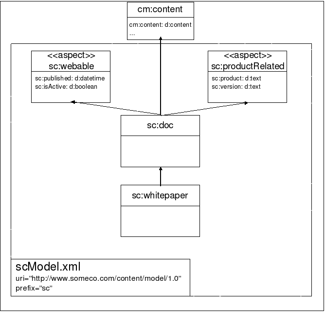
As the drawing shows, there is a common root type called sc:doc with one child, sc:whitepaper. Neither type currently has any properties of their own.
It's not shown on the model diagram, but there is a Peer Association defined as part of sc:doc to keep track of related documents. The target class of the association will be sc:doc because the requirement is to be able to associate any instance of sc:doc or its children with one or more instances of sc:doc or its children.
In addition, there are two aspects. One, the sc:webable aspect, is used for content that is to be shown on the web site. It contains the sc:isActive flag and sc:published date. The sc:productRelated aspect is used only for content that relates to a SomeCo product. It captures the specific product name the content is related to as well as the product version.
It should be easy to see how the model might be extended over time. The requirements mentioned social features being needed at some point. A rateable aspect could be added along with a rating type. Comments could work the same way. Or you could choose to use the rating and commenting features available out-of-the-box.
As new content types are identified they will be added under sc:doc.
Using the aspect to determine whether or not to show the content on the portal is handy, particularly in light of the SomeCo decision to use Alfresco for all of its content management needs. The repository will contain content that may or may not be on the portal. Portal content will be easily-distinguishable from non-portal content by the presence of the sc:webable aspect.
Setting Up¶
Before starting, let's get a local development environment set up. First I'll give you a list of the tools you'll need, then I'll explain the project organization.
Tools¶
Here is what I am using on my machine:
- MacOS 11.4
- Java OpenJDK 11.0.2
- Apache Maven 3.8.1
- Alfresco Maven SDK 4.2 (No download necessary)
- Docker 20.10.6
- Docker Compose 1.29.1
By default, when you create an Alfresco project using the Alfresco Maven SDK the project will be configured to depend on the latest stable Alfresco Community Edition build.
Note that version 3.0.x of the Alfresco Maven SDK works with Alfresco 4.2.7 through and including Alfresco 5.2.x. Version 4.0 of the SDK works with Alfresco 6.0 and higher. Version 4.2 of the SDK works with Alfresco 7.0. This tutorial assumes you are using SDK 4.2.0.
Projects created using the Alfresco Maven SDK are runnable. Version 3.0.x of the SDK uses an embedded Tomcat server and an H2 in-memory database while version 4.0.x of the SDK (and newer) uses Docker and Docker Compose. This makes downloading and installing Alfresco optional. But if you want to run a full Alfresco server locally, you are welcome to do that.
An IDE is also optional. Most people working with Alfresco use IntelliJ, Eclipse, or something similar.
Project Organization¶
The Alfresco Maven SDK is used to bootstrap the project. It will be configured to package customizations into two AMPs (Alfresco Module Packages): One AMP is for the Alfresco web application (the "repo" tier) and the other is for the Alfresco Share web application (the "Share" tier).
This tutorial will use two projects:
- content-tutorial: This is the parent project that includes a repository tier module, a Share tier module, and an integration-tests module. The repository tier module contains the custom content model declaration that you'll create in Part 1 of this tutorial. The share tier module contains the Alfresco Share user interface configuration that you'll create in Part 2 of this tutorial.
- content-tutorial-cmis: This project contains runnable Java classes that show how to use the CMIS API to perform CRUD functions against content that leverages your custom content model. You'll create this project in Part 3 of this tutorial.
From an Apache Maven perspective, each of these two projects as well as each of the content-tutorial project's modules will have their own pom.xml.
Speaking of Apache Maven, I am not going to spend much time talking about how the Alfresco Maven SDK works. If you aren't already familiar with it, you may want to read the Getting Started with the Alfresco Maven SDK tutorial on ecmarchitect.com first and then come back to this one.
Implementing and Deploying the Model¶
Here are the steps to follow when configuring a custom content model:
- Create a new project using the Alfresco Maven SDK
- Create a custom content model XML file
- Register the new model XML file using a Spring bean
- Test your changes
Let's go through each of these.
Step 1: Create a new AMP Project¶
The first step is to create a new project using the Alfresco Maven SDK. Follow these steps:
- If you have not already done so, create an empty directory that can hold the new projects associated with this tutorial. I'll refer to that as $TUTORIAL_HOME.
-
Now use the Alfresco Maven SDK to create a project for the repo tier AMP. Using the command line, change directories to $TUTORIAL_HOME, then run:
mvn archetype:generate -Dfilter=org.alfresco: -
Choose the "alfresco-allinone-archetype" archetype.
- Choose version 4.2.0 of the archetype if prompted.
- Specify "com.someco" for the
groupId. - Specify "content-tutorial" for the
artifactId. - If your IDE isn't running, start it up and import the content-tutorial project you just created.
If you have problems after the import, go ahead and resolve those. Consult the Alfresco Maven SDK tutorial if you need help with that.
Starting with SDK 3.0, the default is to create JAR files. We want to create AMP files instead, so edit the pom.xml and uncomment the maven-assembly-plugin.
Now you are ready to create your custom content model XML.
Step 2: Create a custom content model XML file¶
Now that you have a project that is ready to package your customizations you can create your content model XML file. To do that, follow these steps:
-
Models belong in a directory called “model” in your project's module directory, which is:
$TUTORIAL_HOME/content-tutorial-platform/src/main/resources/alfresco/module/content-tutorial-platformIf the "model" directory does not exist when the project is initially created by the Alfresco Maven SDK, go ahead and create it now. If it does exist and there are files in it, delete them now. 2. Custom models live in the model directory as XML. Create a new XML file in the model directory called "scModel.xml". The name of the file isn't important but you should choose a name that will help you and your team distinguish it from other model files you might add to this directory over time. 3. Copy the following XML into the scModel.xml file and save.
<?xml version="1.0" encoding="UTF-8"?> <!-- Definition of new Model --> <model name="sc:somecomodel" xmlns="http://www.alfresco.org/model/dictionary/1.0"> <!-- Optional meta-data about the model --> <description>Someco Model</description> <author>Jeff Potts</author> <version>1.0</version> <!-- Imports are required to allow references to definitions in other models --> <imports> <!-- Import Alfresco Dictionary Definitions --> <import uri="http://www.alfresco.org/model/dictionary/1.0" prefix="d" /> <!-- Import Alfresco Content Domain Model Definitions --> <import uri="http://www.alfresco.org/model/content/1.0" prefix="cm" /> </imports> <!-- Introduction of new namespaces defined by this model --> <namespaces> <namespace uri="http://www.someco.com/model/content/1.0" prefix="sc" /> </namespaces> <constraints> <constraint name="sc:campaignList" type="LIST"> <parameter name="allowedValues"> <list> <value>Application Syndication</value> <value>Private Event Retailing</value> <value>Social Shopping</value> </list> </parameter> </constraint> </constraints> <types> <!-- Enterprise-wide generic document type --> <type name="sc:doc"> <title>Someco Document</title> <parent>cm:content</parent> <associations> <association name="sc:relatedDocuments"> <title>Related Documents</title> <source> <mandatory>false</mandatory> <many>true</many> </source> <target> <class>sc:doc</class> <mandatory>false</mandatory> <many>true</many> </target> </association> </associations> <mandatory-aspects> <aspect>cm:generalclassifiable</aspect> </mandatory-aspects> </type> <type name="sc:whitepaper"> <title>Someco Whitepaper</title> <parent>sc:doc</parent> </type> <type name="sc:marketingDoc"> <title>Someco Marketing Document</title> <parent>sc:doc</parent> <properties> <property name="sc:campaign"> <type>d:text</type> <multiple>true</multiple> <constraints> <constraint ref="sc:campaignList" /> </constraints> </property> </properties> </type> </types> <aspects> <aspect name="sc:webable"> <title>Someco Webable</title> <properties> <property name="sc:published"> <type>d:date</type> </property> <property name="sc:isActive"> <type>d:boolean</type> <default>false</default> </property> </properties> </aspect> <aspect name="sc:productRelated"> <title>Someco Product Metadata</title> <properties> <property name="sc:product"> <type>d:text</type> <mandatory>true</mandatory> <multiple>true</multiple> </property> <property name="sc:version"> <type>d:text</type> <mandatory>true</mandatory> <multiple>true</multiple> </property> </properties> </aspect> </aspects> </model>
Referring back to the earlier drawing of SomeCo's initial content model, you'll see that it matches up with the XML above with a small exception. As shown in the diagram, there are two aspects, each with two properties, the enterprise-wide ancestor type called sc:doc, a type for whitepapers called sc:whitepaper, and a third type, sc:marketingDoc, which I added so you could see an example of how constraints work.
When building your own custom content models, you may want to use the out-of-the-box contentModel.xml, discussed earlier, as a reference.
Here's an important note about the content model schema that may save you some time: Order matters. For example, if you move the associations element after mandatory-aspects Alfresco won't be able to parse your model. Refer to the modelSchema.xsd referenced earlier to determine the expected order.
Step 3: Register the new model with a Spring bean¶
The next step is to register the new model with a Spring bean in a Spring context file. You'll find that the Alfresco Maven SDK has already created a Spring context file for your module in:
$TUTORIAL_HOME/content-tutorial-platform/src/main/resources/alfresco/module/content-tutorial-platform/context
The file is named bootstrap-context.xml. If you open that file you'll see that two Spring beans are already there. They were created by the Alfresco Maven SDK and they are used to wire in an example content model, workflow model, and sample workflows.
Delete the two sample Spring beans. You will replace these with your own definitions.
To register the custom content model with Spring, all we have to do is add a new bean element to the list of beans. The new bean element looks like this:
<!-- Registration of new models -->
<bean id="${project.artifactId}_dictionaryBootstrap" parent="dictionaryModelBootstrap" depends-on="dictionaryBootstrap">
<property name="models">
<list>
<value>alfresco/module/${project.artifactId}/model/scModel.xml</value>
</list>
</property>
</bean>
Notice the ${project.artifactId} placeholder. That will be automatically replaced by the Alfresco Maven SDK using the artifactId specified in the pom.xml file when Maven generates the AMP.
Step 4: Test Your Changes¶
The last step is to test your changes. The Alfresco Maven SDK makes that easy. Do this:
- From the command line, change directories to $TUTORIAL_HOME/content-tutorial-platform.
-
Run:
mvn install -DskipTests
The first time you do this it may take quite a while. Maven is downloading everything it needs to compile and package the project.
If everything goes as expected you should see:
[INFO] ------------------------------------------------------------------------
[INFO] BUILD SUCCESS
[INFO] ------------------------------------------------------------------------
[INFO] Total time: 1.465 s
[INFO] Finished at: 2019-02-11T13:22:29-06:00
[INFO] Final Memory: 25M/501M
[INFO] ------------------------------------------------------------------------
If you get a build failure, it is time to debug. Make sure that:
- The bean in service-context.xml refers to the proper path and file name of your custom content model XML file.
- Your custom content model XML file is well-formed and valid.
If you still have problems, post as much detail as you can in the Alfresco Forums.
Success¶
You have now created an AMP that contains a custom content model. If you go look in:
$TUTORIAL_HOME/content-tutorial-platform/target
you'll see a file named content-tutorial-platform-1.0-SNAPSHOT.amp. That AMP can be installed in an Alfresco installation. For example, if you are running Alfresco using the binary installer, you can copy the AMP to $ALFRESCO_HOME/amps and then run $ALFRESCO_HOME/bin/apply_amps.sh to install the AMP into your Alfresco web application.
For the purpose of this tutorial, though, let's keep moving. You've got your content model defined but the Alfresco Share user interface doesn't know anything about it yet. You'll learn how to do that next.
Part 2: Configuring Alfresco Share¶
Now that the model is defined, you could begin using it right away by writing code against one of Alfresco's API's that creates instances of your custom types, adds aspects, etc. In practice it is usually a good idea to do just that to make sure the model behaves like you expect. In fact, if you just can’t wait to see some code to create, query, and update content, skip to Part 3. For everyone else, let's talk about how to configure Alfresco Share so that end-users can work with the custom content model you just created.
Configuring the Custom Model in Alfresco Share¶
Let’s continue by configuring Alfresco Share to work with our custom content model.
First, think about the Alfresco Share client and all of the places the content model customizations need to show up:
-
“Is sub-type” criteria. When a user configures a rule on a space and uses content types as a criteria, the custom types should be a choice in the list of possible content types.
-
“Has aspect” criteria. When a user configures a rule on a space and uses the presence of an aspect as a criteria, the custom aspects should be a choice in the list of possible aspects.
-
Change type action. When a user runs the “specialize type” action, either as part of a rule configuration or through the “Change Type” UI action, the custom types should be available.
-
Add aspect. When a user runs the “add aspect” action, either as part of a rule configuration or through the “Manage Aspects” UI action, the custom aspects should be available.
-
Document Details. When a user looks at the document details page for a piece of content stored as one of the custom types or with one of the custom aspects attached, the properties section should show the custom properties.
-
Edit Properties. When a user edits the properties of a piece of content, either with the “full” form or the abbreviated form, the appropriate properties should be shown.
-
Advanced search. When a user runs an advanced search, they should be able to restrict search results to instances of our custom types and/or content with specific values for the properties of our custom types.
Let's configure Alfresco Share to make each of the areas mentioned above work with our custom content model. To do that, we're going to:
- Create a custom Share configuration file.
- Test our changes.
Let's do it.
Step 1: Create a custom Share configuration file¶
A module called "content-repo-share" was added to our project when we created the content-tutorial project using the Alfresco SDK using the "all-in-one" archetype.
Alfresco Share uses a configuration file called "share-config-custom.xml". The share-config-custom.xml file is a proprietary file composed of numerous “config” elements. Each config element has an “evaluator” and a “condition”. Extending the out-of-the-box Share configuration is a matter of knowing which evaluator/condition to use.
The location of the share-config-custom.xml file is a little counter-intuitive. Ultimately, we want that file to be placed under META-INF in a JAR file that will go into the Share web application's WEB-INF/lib. Putting the file in a JAR keeps it from overwriting other modules that may also be providing their own share-config-custom.xml.
Create an empty XML file called "share-config-custom.xml" in:
$TUTORIAL_HOME/content-tutorial-share/src/main/resources/META-INF
We'll add to that file in the next sections.
Add Custom Types and Aspects to Lists¶
The first four items in our configuration wish list have to do with telling the Share user interface about custom types and aspects. A single set of configuration will take care of all four items.
-
Edit the share-config-custom.xml file you just created and add the following:
2. Now add an<alfresco-config> <!-- Document Library config section --> <config evaluator="string-compare" condition="DocumentLibrary"> </config> </alfresco-config>aspectselement as a child of theconfigelement to identify the aspects that are visible, addable, and removeable:<aspects> <!-- Aspects that a user can see --> <visible> <aspect name="sc:webable" /> <aspect name="sc:productRelated" /> </visible> <!-- Aspects that a user can add. Same as "visible" if left empty --> <addable> </addable> <!-- Aspects that a user can remove. Same as "visible" if left empty --> <removeable> </removeable> </aspects>As the comments suggest, the
addableandremoveableelements can remain empty if the list is the same. 3. That takes care of aspects. Let’s configure the types. Add atypeselement as a sibling to theaspectselement you just added with the following content:<types> <type name="cm:content"> <subtype name="sc:doc" /> <subtype name="sc:whitepaper" /> </type> <type name="sc:doc"> <subtype name="sc:whitepaper" /> </type> </types>
Notice how sc:whitepaper appears in the list twice—once as a subtype of cm:content and once as a subtype of sc:doc. This allows a user to specialize directly to the sc:whitepaper type regardless of whether the original type is cm:content or sc:doc.
Step 2: Test Your Changes¶
You need two things to test this: An Alfresco repository that is running the repo tier AMP you created in Part 1 and an Alfresco Share web application running the Share tier AMP you just started working on. Because you created the project using the all-in-one archetype, you've got both in a single project. So, to test both the repository tier and the Share tier, all you have to do is launch the project using the embedded Tomcat server. Do this:
- Open a command line window.
- Switch to $TUTORIAL_HOME.
-
Run:
./run.sh build_startIf you get a permissions problem you may have to run
chmod u+x run.shfirst.This script will download images from Docker Hub (or quay.io if you are using Enterprise Edition), copy your AMPs to the containers, then use Docker Compose to start up several containers.
Now open your browser and point it to http://localhost:8180/share. Log in using admin/admin and let’s see what’s different.
What’s different is that the “is sub-type” dropdown in the rule configuration panel now has our custom types and the “has aspect” dropdown now has our custom aspects.
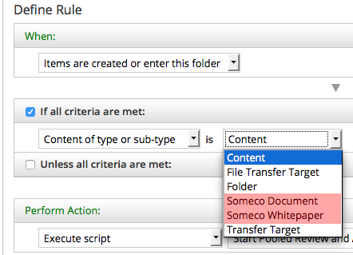
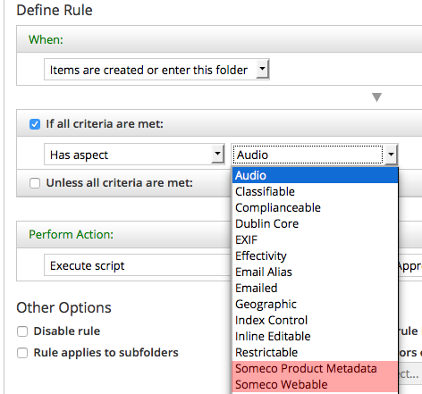
The “change type” dropdown, in both the rule configuration and UI action, lists our custom types:
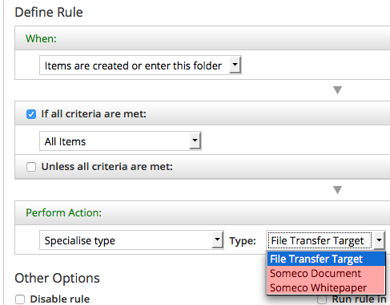
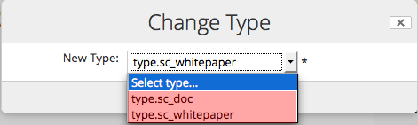
And the “add aspect” list, in both the rule configuration and UI action, lists our custom aspects:
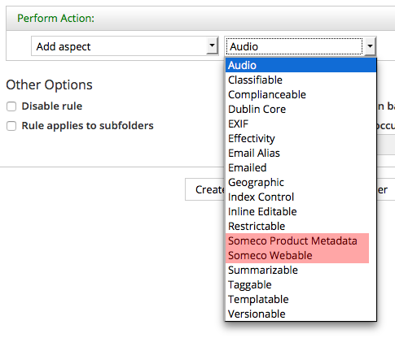
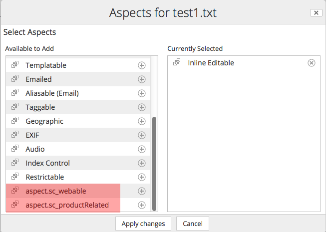
You’ll notice that in the rule configuration the types and aspects are shown with their localized names while in the dialogs the strings are shown as not yet localized (their ID is displayed instead of their localized string). That’s because the strings for Share haven’t yet been localized and some services, like the rule configuration, will pull those strings from the content model XML. If it is annoying you, jump to the localization section and come back.
Configuring Forms for Custom Properties¶
Try this: Create a piece of test content. Change its type to sc:whitepaper and add both of our custom aspects to it. Then, from the Document Library, click the "Edit Properties" link for that piece of test content. You'll see a form that looks something like this:
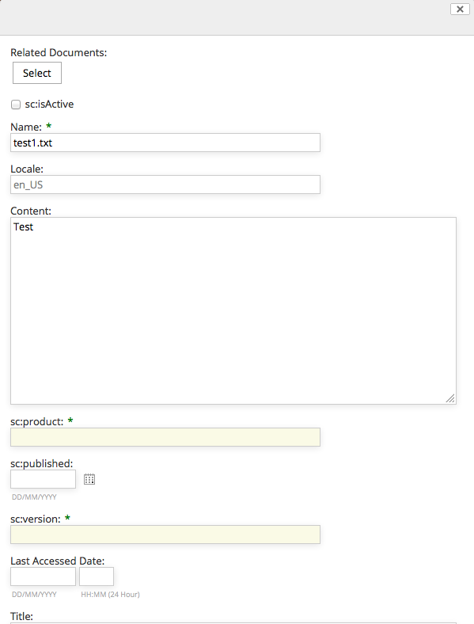
When you compare this to the pop-up that is displayed for an instance of cm:content you will see a big difference. The edit properties dialog for sc:whitepaper is a jumbled mess. The locale is showing up for some reason. The title field is halfway down the form, which has grown extremely long with all sorts of fields.
What’s going on here is that Share is looking for a form configuration for sc:whitepaper. Finding none, it is just listing all of the properties of the object.
Content properties can be edited two ways:
- Using the edit metadata popup dialog, which is what you get when you click “Edit Properties” from the document library page
- Using the default form, which is what you get when you click “Edit Properties” from the document details page.
Clearly something prettier is needed for both the default form and the edit metadata form, so let’s fix that.
Configuring the form service for a custom type¶
Alfresco Share uses the Form Service to decide which properties to show for a given form, how to lay out forms, and the control to use for each property. Let’s take a look at the out-of-the-box form configuration for cm:content. Because you've already launched Alfresco Share on your embedded Tomcat server, the exploded Share web application exists in your project's target directory. The out-of-the-box share-form-config.xml file resides in target/share-war/WEB-INF/classes/alfresco/share-form-config.xml.
If you open that file and search for ‘condition=”cm:content”’ you’ll find two config elements that contain a total of six form configurations. One config element, identified by the node-type evaluator, is for forms dealing with existing nodes. The config element with the model-type evaluator is for forms used to create new nodes.
Let’s focus on existing nodes for now. The three forms in that config element are:
- Default (
formelement with noidattribute). This is the form displayed when you open the document details. - A form called
doclib-simple-metadata. This is used when you edit properties from the document library. - A form called
doclib-inline-edit. This is used when you click the “Inline Edit” UI action.
Suppose whitepapers need to have the same metadata displayed as instances of cm:content. To do that:
- Copy the entire config element and all of its children into share-config-custom.xml as a sibling of the Document Library config element you added to that file earlier.
- Then, change the condition from
cm:contenttosc:whitepaper.
To test this change:
- Go to the terminal window currently tailing the logs of the running containers.
- Click ctrl+c to interrupt the tail.
- Re-build the AMPs by running
mvn install -DskipTests -
Re-build and re-run the Share container using:
./run.sh reload_share
Now when you log in to Alfresco Share, you’ll see that the property sets match for sc:whitepaper and cm:content across all forms, as shown below:
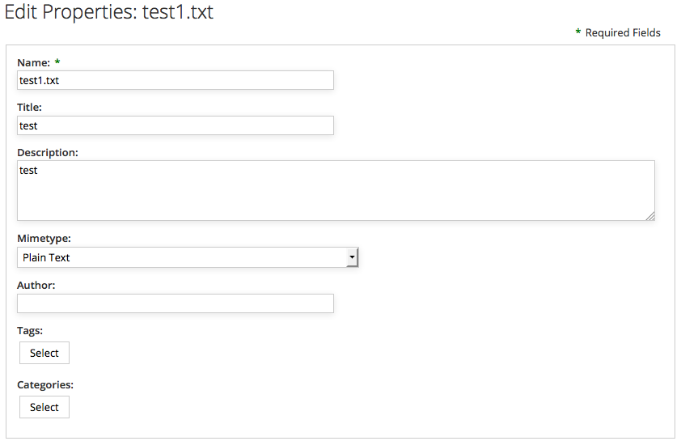
Let's build on the form definition for sc:whitepaper to include properties and associations from the custom content model.
Configuring the form service for custom properties¶
The document details for a whitepaper looks better, but the form isn’t showing the custom metadata. In this particular example, our model defines an association called sc:relatedDocuments which sc:whitepaper inherits from sc:doc and four properties across two custom aspects.
For the properties defined in aspects, you have a choice. You can either add the properties to every form definition you want them to appear in. Or, you can add an aspect configuration so that they’ll automatically be displayed for any object that includes that aspect. The advantage of the former is that you can have fine-grained control over where those fields appear whereas if you choose the latter route, the form service will decide where to include your fields.
This example takes the latter route. Edit the share-config-custom.xml file and add the following aspect configuration for sc:webable:
<config evaluator="aspect" condition="sc:webable">
<forms>
<form>
<field-visibility>
<show id="sc:published" />
<show id="sc:isActive" />
</field-visibility>
<appearance>
<field id="sc:published" label-id="prop.sc_published" />
<field id="sc:isActive" label-id="prop.sc_isActive" />
</appearance>
</form>
</forms>
</config>
You can add the aspect configuration for sc:productRelated following the same pattern.
Notice that there are two elements you have to worry about—the field-visibility element defines which properties are on the form while the appearance element defines how those properties are rendered. In this example I’m showing only a label-id, but there are a lot of options here. For example, if you wanted to override the component used to display the property, this is where you’d do it.
Let’s take care of the sc:relatedDocuments association. It’s not defined in an aspect, so it is added directly to the form configuration for sc:whitepaper. It probably makes sense for the related documents property to be shown on both the default form and the edit metadata popup dialog. To do that, you’re going to modify the default form configuration element for sc:whitepaper that you created earlier. First add a show element just before the closing field-visibility tag:
<!-- surf:widget aspect -->
<show id="surf:widgetType"/>
<show id="surf:mid"/>
<show id="surf:label"/>
<!-- sc:doc -->
<show id="sc:relatedDocuments" />
</field-visibility>
Then, add a new field element just before the closing appearance tag:
<field id="cm:addressees" read-only="true" />
<field id="cm:sentdate" read-only="true" />
<field id="cm:subjectline" read-only="true" />
<field id="sc:relatedDocuments" label-id="assoc.sc_relatedDocuments" />
</appearance>
Now do the same thing for the doclib-simple-metadata form.
To see your changes, re-build the AMPs using mvn install -DskipTests then re-build and re-run the Share container using ./run.sh reload_share. You should see all four custom properties and the related documents association in the document details page, like this:
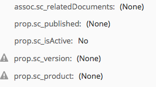
Similarly, when you click "Edit Properties" from the document details page you should see the association and the properties:
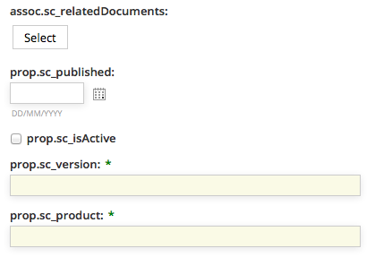
On the edit metadata pop-up dialog you should see the related documents association, like this:
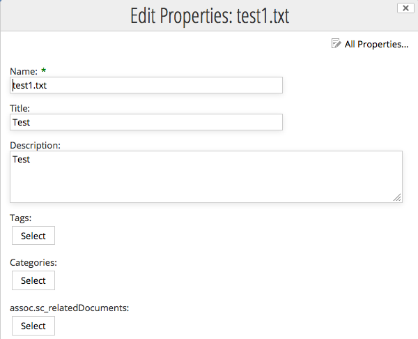
Now let's turn our attention to search.
Configuring Advanced Search in Alfresco Share¶
The advanced search form in Alfresco Share allows end-users to first select what they are looking for and then specify both full-text and specific property values to search for depending on the content type selected. Out-of-the-box, the search form includes two types: cm:content and cm:folder.
Users need to be able to search specifically for SomeCo Whitepapers, so the first step is to add the sc:whitepaper type to the list. Like the other Share form configuration covered thus far, the configuration goes in share-config-custom.xml. In this case, the condition is AdvancedSearch.
<config replace="true" evaluator="string-compare" condition="AdvancedSearch">
<advanced-search>
<!-- Forms for the advanced search type list -->
<forms>
<form labelId="search.form.label.cm_content" descriptionId="search.form.desc.cm_content">cm:content</form>
<form labelId="search.form.label.cm_folder" descriptionId="search.form.desc.cm_folder">cm:folder</form>
<form labelId="type.sc_whitepaper" descriptionId="search.form.desc.sc_whitepaper">sc:whitepaper</form>
</forms>
</advanced-search>
</config>
Notice that the list of advanced search forms replaces the out-of-the-box list. If the list only had sc:whitepaper and left out cm:content and cm:folder, Share users would not be able to search for plain content or folders.
The next step is to tell Share which form to use when a given type is selected. Recall earlier that there are two sets of form configuration—one for existing nodes (evaluator of node-type) and one for new nodes (evaluator of model-type). Search forms go in the model-type evaluator.
The search form for whitepapers should be the same as the one for plain content, but should include the four properties defined in the custom aspects. The easiest way to do this is to copy the cm:content search form from the out-of-the-box form configuration into share-config-custom.xml and then modify it to suit our needs. The code listing below shows this:
<!-- sc:whitepaper type (new nodes) -->
<config evaluator="model-type" condition="sc:whitepaper">
<forms>
<!-- Search form -->
<form id="search">
<field-visibility>
<show id="cm:name" />
<show id="cm:title" force="true" />
<show id="cm:description" force="true" />
<show id="mimetype" />
<show id="cm:modified" />
<show id="cm:modifier" />
<!-- sc:productRelated -->
<show id="sc:product" />
<show id="sc:version" />
<!-- sc:webable -->
<show id="sc:isActive" />
<show id="sc:published" />
</field-visibility>
<appearance>
<field id="mimetype">
<control template="/org/alfresco/components/form/controls/mimetype.ftl" />
</field>
<field id="cm:modifier">
<control>
<control-param name="forceEditable">true</control-param>
</control>
</field>
<field id="cm:modified">
<control template="/org/alfresco/components/form/controls/daterange.ftl" />
</field>
<!-- sc:productRelated -->
<field id="sc:product" label-id="prop.sc_product">
<control template="/org/alfresco/components/form/controls/textfield.ftl" />
</field>
<field id="sc:version" label-id="prop.sc_version">
<control template="/org/alfresco/components/form/controls/textfield.ftl" />
</field>
<!-- sc:webable -->
<field id="sc:isActive" label-id="prop.sc_isActive">
<control template="/org/alfresco/components/form/controls/checkbox.ftl" />
</field>
<field id="sc:published" label-id="prop.sc_published">
<control template="/org/alfresco/components/form/controls/daterange.ftl" />
</field>
</appearance>
</form>
</forms>
</config>
It is important to note that the field elements in the appearance section require the form control to be specified. If it is not specified, the field will not show up on the search form.
After re-building the AMP and reloading the Share container, the SomeCo Whitepaper type is included in the advanced search dropdown, and four fields for the aspect properties are shown in the search form.
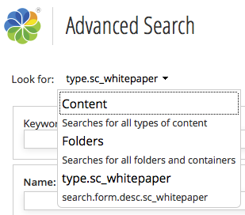
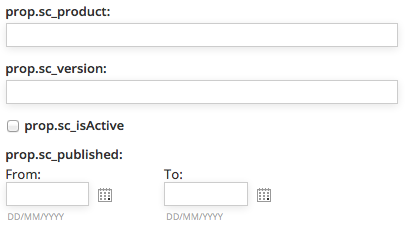
Localizing Strings for Custom Content Models¶
We’ve put off localizing the form labels until now. To fix this, first create a messages bundle, then register it with a Spring bean. Here are the steps:
- Create a new folder called "messages" in $TUTORIAL_HOME/content-tutorial-share/src/main/resources/alfresco/web-extension. If the folder is already there, delete any files that may already be present.
-
In the messages folder, create a new file called "scModel.properties" with the following content:
#sc:doc type.sc_doc=SomeCo Doc assoc.sc_relatedDocuments=Related Documents #sc:whitepaper type.sc_whitepaper=SomeCo Whitepaper search.form.desc.sc_whitepaper=Search for SomeCo Whitepapers #sc:webable aspect.sc_webable=SomeCo Webable prop.sc_published=Published prop.sc_isActive=Active? #sc:productRelated aspect.sc_productRelated=SomeCo Product Related prop.sc_product=Product prop.sc_version=Version -
We need to register this properties bundle with Spring. Share does not look in module directories for Spring context files. Instead, it uses the web-extension folder. That folder already exists in $TUTORIAL_HOME/content-tutorial-share/src/main/resources/alfresco.
- In the web-extension folder, create a new file called "content-tutorial-share-context.xml". I am using the
artifactIdas part of the file name because this file will ultimately end up in a folder that may contain other Spring configuration files and I don't want this one to collide with any of those. If the SDK already placed a similar file in the folder, it is okay to use it instead, just clear out the contents of the file. -
Add the following content to the file, then save:
<?xml version='1.0' encoding='UTF-8'?><!DOCTYPE beans PUBLIC '-//SPRING//DTD BEAN//EN' 'http://www.springframework.org/dtd/spring-beans.dtd'> <beans> <!-- Add Someco messages --> <bean id="com.someco.content-tutorial-share.resources" class="org.springframework.extensions.surf.util.ResourceBundleBootstrapComponent"> <property name="resourceBundles"> <list> <value>alfresco.web-extension.messages.scModel</value> </list> </property> </bean> </beans>
Now re-build the AMPs and reload the Share container and you should see that the types, aspects, and properties have the localized labels.
Share Configuration Summary¶
You’ve seen that configuring Alfresco Share for your custom content model essentially involves adding XML to the share-config-custom.xml file and creating a properties file for your localized strings. All of this lives in a project created by the Alfresco Maven SDK and is packaged and deployed as an AMP.
There are other things you might like to do to the Share user interface, but these are beyond the scope of this document:
- Add custom content types to the Create menu
- Add custom properties to the document library sort criteria
- Add custom properties to the document library data grid
Now let’s turn our attention from the front-end to the back-end to understand how to create, query, update, and delete content using code running remotely from the Alfresco server.
Part 3: Working with Content Programmatically¶
So far we've created a custom model and we've configured Alfresco Share to let end users work with the types, aspects, and properties defined in the custom model. For simple document management solutions, this may be enough. Often, code will also required. It could be code in a web application that needs to work with the repository, code that implements custom behavior for custom content types, or code that implements Alfresco web client customizations.
There are several API's available depending on what you want to do. The table below outlines the choices:
| Solution type | Language | Alfresco API |
|---|---|---|
| Alfresco Share user interface customizations | Freemarker Templating Language, Java/JSP, JavaScript | Alfresco Freemarker API, Alfresco JavaScript API |
| Custom applications with an embedded Alfresco repository (Repository runs in the same process as the application) | Java | Alfresco Foundation API |
| Custom applications using a remote Alfresco repository | Java, Python, PHP, .NET, or any language that can make calls via HTTP | CMIS, Web Scripts, REST API |
Table: Alfresco API Options
The best way to make remote calls to the Alfresco repository is to leverage Alfresco’s support for the Content Management Interoperability Services (CMIS) standard. So let’s look at CMIS examples for creating, updating, querying, and deleting content. The client API’s available from the Apache Chemistry project offer a variety of languages to choose from. This tutorial focuses on Java.
If you need to learn how to make these other styles of customizations, consult ecmarchitect.com and the Alfresco Documentation.
Setup¶
Let's run through some examples that leverage OpenCMIS to work with instances of the custom types defined in the model. To facilitate this, I'm going to create a new Maven project as a sibling to the content-tutorial project. Because the new project doesn't produce AMPs it does not make sense to use the Alfresco Maven SDK to create it.
To create the CMIS project, do this:
- Create a new project called "content-tutorial-cmis".
- Create a source directory called "java" in "src/main".
- If you are using Eclipse, convert the project to a Maven project using Configure, Convert to Maven Project. This will create a default pom.xml in the root of your project folder. I am using "com.someco" for the
groupIdand "content-tutorial-cmis" for theartifactId. - Edit the pom.xml file that belongs to "content-tutorial-cmis".
-
This project uses the OpenCMIS library from Apache Chemistry and the content-tutorial project, so add those as dependencies:
<dependency> <groupId>org.apache.chemistry.opencmis</groupId> <artifactId>chemistry-opencmis-client-impl</artifactId> <version>1.1.0</version> </dependency> <dependency> <groupId>com.someco</groupId> <artifactId>content-tutorial</artifactId> <version>1.0-SNAPSHOT</version> </dependency>
The content-tutorial-cmis project depends on some constants that are related to our custom content model, so those make sense to be defined in the content-tutorial project within the content-tutorial-platform module. For this tutorial, all we need is the com.someco.model.SomeCoModel.java class which contains constants that map to the custom content model. These constants are used for convenience by Java classes that need to know things like namespaces, names of content types, etc. If you are building your own project just copy it from the source.
CMIS 1.0 and the Alfresco OpenCMIS Extension Library¶
Alfresco offers support for both CMIS 1.0 and CMIS 1.1. Unless you have a good reason to stick with the old version, you should be hitting the CMIS 1.1 end points. If you are using CMIS 1.1, skip this section and go on to "Start Your Repository".
If you are using CMIS 1.0, you may want to use an additional library called the Alfresco OpenCMIS Extension. It was created to make it easier to work with aspects before native support for aspects was added to CMIS 1.1. If you need to work with CMIS 1.0 for some reason, add the following to the CMIS project pom.xml:
<dependency>
<groupId>org.alfresco.cmis.client</groupId>
<artifactId>alfresco-opencmis-extension</artifactId>
<version>1.0</version>
</dependency>
As well as the repository where the OpenCMIS Extension Library resides:
<repositories>
<repository>
<id>artifacts.alfresco.com</id>
<name>Alfresco Maven Repository</name>
<url>https://artifacts.alfresco.com/nexus/content/groups/public/</url>
</repository>
</repositories>
Start Your Repository¶
To run the examples in Part 3 you need to have an Alfresco repository running with the repo tier AMP you created in Part 1. Using the /run.sh build_start script to fire up your SDK-created Docker containers as shown in that part of the tutorial works fine. If it isn't running already, go ahead and start it up.
Now you are ready to write some code.
Creating Content with OpenCMIS¶
The goal here is to create a runnable class called SomeCoCMISDataCreator that accepts arguments for the username, password, folder in which to create the content, type of content we're creating, and a name for the new content. I've left out the main method as well as the code that establishes the session, but you can see the full class here.
The first thing the code does is grab a session. The getSession() method is inherited from a class called CMISExampleBase which is used for all of the CMIS examples in this document. The important thing to know about that method is that it uses the value of serviceUrl to know how to connect to your Alfresco server. The URL currently specified is the one to use when connecting to a 5.x server running on localhost using the AtomPub binding. The URL is:
http://localhost:8080/alfresco/api/-default-/public/cmis/versions/1.1/atom
A common mistake is to use an old CMIS service URL, so make sure you are using the correct one according to the version of Alfresco you are using.
Once the code has a session, it gets a reference to the folder where the content will be created. The timestamp is incorporated into the content name so that if the code is run multiple times, the object names will be unique.
Session session = getSession();
// Grab a reference to the folder where we want to create content
Folder folder = (Folder) session.getObjectByPath("/" + getFolderName());
String timeStamp = new Long(System.currentTimeMillis()).toString();
String filename = getContentName() + " (" + timeStamp + ")";
Next, the code sets up the properties that will be set on the new document. It creates a Map of Strings and Objects to hold the property names and values.
// Create a Map of objects with the props we want to set
Map <String, Object> properties = new HashMap<String, Object>();
properties.put(PropertyIds.NAME, filename);
properties.put(PropertyIds.OBJECT_TYPE_ID, "D:sc:whitepaper");
properties.put(PropertyIds.SECONDARY_OBJECT_TYPE_IDS,
Arrays.asList(
"P:sc:webable",
"P:sc:productRelated",
"P:cm:generalclassifiable"
)
);
properties.put("sc:isActive", true);
GregorianCalendar publishDate = new GregorianCalendar(2007,4,1,5,0);
properties.put("sc:published", publishDate);
Notice that the base type is being set with the OBJECT_TYPE_ID property. The aspects are being set with the SECONDARY_OBJECT_TYPE_IDS property, which accepts a list of aspect IDs.
It is also important to point out that, in CMIS, document types begin with “D:” while policy types begin with “P:”. (The 'P' stands for "Policy". CMIS 1.0 didn’t have a native concept of aspects, and as a workaround, aspects were referred to using a CMIS concept called a “Policy”).
The next step is to prepare the content that will be set on the new object. This is a matter of calling the createContentStream() method on the ObjectFactory with the file name, length, mimetype, and an InputStream based on the content.
String docText = "This is a sample " + getContentType() + " document called " +
getContentName();
byte[] content = docText.getBytes();
InputStream stream = new ByteArrayInputStream(content);
ContentStream contentStream = session.getObjectFactory().
createContentStream(
filename, Long.valueOf(content.length), "text/plain", stream
);
Finally, the code tells the folder to create a new document and passes in the properties, content stream, and versioning state, then dumps the length of the content that was created.
Document doc = folder.createDocument(properties, contentStream,
VersioningState.MAJOR);
System.out.println("Content Length: " + doc.getContentStreamLength());
If you are in an IDE like Eclipse, you should be able to set the arguments and run this class easily. If you want to do it from the command line, you can run it via Maven so that it will set up the classpath for you. To do that you would run:
mvn exec:java \
-Dexec.mainClass="com.someco.cmis.examples.SomeCoCMISDataCreator" \
-Dexec.args="admin admin SomeCo whitepaper test"
Running SomeCoCMISDataCreator.class produces:
Created: dbe2a709-5fd8-453e-9f9d-dff1e4c785d3;1.0
Content Length: 59
If you are following along, you might want to run it a few times to have some test content to play with.
Creating Associations with OpenCMIS¶
Now let's look at a class that creates a “related documents” association between two documents.
The SomeCoCMISDataRelater class accepts a source object ID and a target object ID as arguments. The code creates a map of properties containing the association type, source ID, and target ID. Note that the association type is preceded by “R:”, which stands for "relationship", when working with CMIS.
Session session = getSession();
// Create a Map of objects with the props we want to set
Map <String, String> properties = new HashMap<String, String>();
properties.put(PropertyIds.OBJECT_TYPE_ID, "R:sc:relatedDocuments");
properties.put(PropertyIds.SOURCE_ID, getSourceObjectId());
properties.put(PropertyIds.TARGET_ID, getTargetObjectId());
try {
session.createRelationship(properties);
} catch (Exception e) {
System.out.println("Oops, something unexpected happened. Maybe the rel already exists?");
}
The last half of the method dumps the associations of the source object. The trick here is that when you make the getObject() call to instantiate the object, you will not get back the relationships by default. The OperationContext that is being instantiated makes sure that happens.
// Dump the object's associations
OperationContext oc = new OperationContextImpl();
oc.setIncludeRelationships(IncludeRelationships.SOURCE);
Document sourceDoc = (Document) session.getObject(
session.createObjectId(getSourceObjectId()),
oc);
List<Relationship> relList = sourceDoc.getRelationships();
System.out.println("Associations of objectId:" + getSourceObjectId());
for (Relationship rel : relList) {
System.out.println(" " + rel.getTarget().getId());
}
The last line calls a method that queries the associations for a given reference. This should dump the association that was just created plus any other associations that have been created for this object.
If you want to run this on your own using Maven, it would look something like this, with your own values for the source and target object ID’s:
mvn exec:java \
-Dexec.mainClass="com.someco.cmis.examples.SomeCoCMISDataRelater" \
-Dexec.args="admin admin SomeCo whitepaper test dbe2a709-5fd8-453e-9f9d-dff1e4c785d3;1.0 bfd4b553-ff58-4d6e-a71b-00a470bd86c9;1.0"
Running the Java snippet as above, assuming no other relationships exist on the source object produces:
Associations of objectId: dbe2a709-5fd8-453e-9f9d-dff1e4c785d3;1.0
bfd4b553-ff58-4d6e-a71b-00a470bd86c9;1.0
Now you can use the Alfresco Share client to view the associations as shown below:
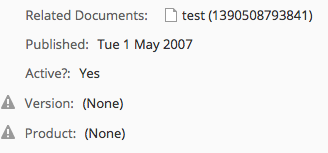
Remember the share-config-custom.xml file? It says that any time the default form or edit metadata form is used for sc:whitepaper objects, the sc:relatedDocuments associations should be shown. Alternatively, the Node Browser, available in the Alfresco Share Administration Console, is a handy way to view associations.
Searching for Content with OpenCMIS¶
Now that there are some instances of SomeCo’s custom types in the repository it is time to write code that will query for those.
Content in the repository is automatically indexed by Alfresco, including properties in your custom content model. You can execute searches to find content based on full-text, property values, content types, and folder paths.
There are a number of supported search dialects. If you are writing code against an Alfresco repository that is 3.4 or higher, you should use either Alfresco FTS or CMIS Query Language, if at all possible. This part of the tutorial is focused on CMIS, so let's write some CMIS Query Language queries.
Just like the content creation code, the SomeCoCMISDataQueries class will be a runnable Java application that accepts the username, password, and folder name as arguments. It includes a generic method used to execute a query which is called repeatedly with multiple query examples.
If you are following along, you should either run the content creation code a few times or create some content manually so you can test out the queries more thoroughly.
Let's take a look at the generic query execution method first, then the method that calls it for each example query string.
The getQueryResults() method is pretty straightforward. It returns a list of CmisObject objects. It instantiates those objects by iterating over the query results, grabbing the objectId from each result, and making a getObject() call on the session.
public List<CmisObject> getQueryResults(String queryString) {
List<CmisObject> objList = new ArrayList<CmisObject>();
Session session = getSession();
// execute query
ItemIterable<QueryResult> results = session.query(queryString, false);
for (QueryResult qResult : results) {
PropertyData<?> propData = qResult.getPropertyById("cmis:objectId");
String objectId = (String) propData.getFirstValue();
CmisObject obj = session.getObject(session.createObjectId(objectId));
objList.add(obj);
}
return objList;
};
The doExamples() method then executes a series of example queries and dumps the results. The first two queries are simple. One returns every instance of sc:doc including instances of types that inherit from sc:doc. The second one finds any objects residing in the folder passed in that contain the word “sample” anywhere in the content. Notice the SQL-like syntax of CMIS Query Language. It basically treats content types as if they were tables.
System.out.println(RESULT_SEP);
System.out.println("Finding content of type:" +
SomeCoModel.TYPE_SC_DOC.toString());
queryString = "select * from sc:doc";
dumpQueryResults(getQueryResults(queryString));
System.out.println(RESULT_SEP);
System.out.println("Find content in the root folder with text like 'sample'");
queryString = "select * from cmis:document where contains('sample') and
in_folder('" + getFolderId() + "')";
dumpQueryResults(getQueryResults(queryString));
You might have noticed the getFolderId() call. The in_folder predicate expects an object ID. So the getFolderId() method does a query to find the object ID of the folder that was passed in as an argument to the class. It would be nice if you could do this in a single query, but you can’t.
Queries on Aspect-based Properties¶
The next query looks for active content. This is when it starts to get interesting because the property that tracks whether or not a piece of content is active, sc:isActive, is defined on an aspect. The CMIS specification allows for joins in queries. But Alfresco does not support joins except in the special case of aspects. In Alfresco CMIS, joins are used to relate a base type to one of its aspects. That allows you to use an aspect-based property in a where clause.
System.out.println(RESULT_SEP);
System.out.println("Find active content");
queryString = "select d.*, w.* from cmis:document as d join sc:webable as w on
d.cmis:objectId = w.cmis:objectId where w.sc:isActive = True";
dumpQueryResults(getQueryResults(queryString));
Queries Across Multiple Aspects¶
The next query shows another special case. In this example the goal is to find the active content that has a product property set to a specific value. That’s a challenge because the sc:isActive property is defined by the sc:webable aspect while the sc:product property is defined by a different aspect, sc:productRelated. Unfortunately, there is no good way to get these results in a single query. The solution used here is to write a method called getSubQueryResults() that accepts two queries as arguments. The method runs the first query and then builds an IN predicate using the object IDs that come back, which it appends to the second query before invoking it.
System.out.println(RESULT_SEP);
System.out.println("Find active content with a product equal to 'SomePortal'");
String queryString1 = "select d.cmis:objectId from cmis:document as d join
sc:productRelated as p on d.cmis:objectId = p.cmis:objectId " +
"where p.sc:product = 'SomePortal'";
String queryString2 = "select d.cmis:objectId from cmis:document as d join
sc:webable as w on d.cmis:objectId = w.cmis:objectId " +
"where w.sc:isActive = True";
dumpQueryResults(getSubQueryResults(queryString1, queryString2));
Queries Using Dates¶
The last query uses the aspect join trick to do a date range search on instances of sc:whitepaper published between a specific range.
System.out.println(RESULT_SEP);
System.out.println("Find content of type sc:whitepaper published between 1/1/2006
and 6/1/2007");
queryString = "select d.cmis:objectId, w.sc:published from sc:whitepaper as d join
sc:webable as w on d.cmis:objectId = w.cmis:objectId " +
"where w.sc:published > TIMESTAMP '2006-01-01T00:00:00.000-05:00' " +
" and w.sc:published < TIMESTAMP '2007-06-02T00:00:00.000-05:00'";
dumpQueryResults(getQueryResults(queryString));
Running the Queries¶
If you want to compile and run this on your own machine, you can use one of the Ant tasks in the build.xml file included in the code that accompanies this article. Just type:
mvn exec:java \
-Dexec.mainClass="com.someco.cmis.examples.SomeCoCMISDataQueries" \
-Dexec.args="admin admin SomeCo"
Your results will vary based on how much content you've created and the values you've set in the content properties, but when I ran my test, the results were as shown below.
======================
Finding content of type:doc
----------------------
Result 1:
id:c7c1a94e-8d9c-4434-89b0-cbe14ef94455;1.0
name:test1.txt
created:Jan 22, 2014 2:22:00 PM
----------------------
Result 2:
id:40ec2412-b1e6-4d86-af8b-4003adeeed46;1.0
name:test (1390506931762)
created:Jan 23, 2014 1:55:31 PM
----------------------
Result 3:
id:c3e61b61-e5d4-4edf-a3e9-0eac61c693e8;1.0
name:test (1390507967128)
created:Jan 23, 2014 2:12:47 PM
----------------------
Result 4:
id:bfd4b553-ff58-4d6e-a71b-00a470bd86c9;1.0
name:test (1390508346539)
created:Jan 23, 2014 2:19:06 PM
----------------------
Result 5:
id:dbe2a709-5fd8-453e-9f9d-dff1e4c785d3;1.0
name:test (1390508353662)
created:Jan 23, 2014 2:19:13 PM
======================
Find content in the root folder with text like 'sample'
----------------------
Result 1:
id:40ec2412-b1e6-4d86-af8b-4003adeeed46;1.0
name:test (1390506931762)
created:Jan 23, 2014 1:55:31 PM
----------------------
Result 2:
id:c3e61b61-e5d4-4edf-a3e9-0eac61c693e8;1.0
name:test (1390507967128)
created:Jan 23, 2014 2:12:47 PM
----------------------
Result 3:
id:bfd4b553-ff58-4d6e-a71b-00a470bd86c9;1.0
name:test (1390508346539)
created:Jan 23, 2014 2:19:06 PM
----------------------
Result 4:
id:dbe2a709-5fd8-453e-9f9d-dff1e4c785d3;1.0
name:test (1390508353662)
created:Jan 23, 2014 2:19:13 PM
----------------------
Result 5:
id:4c9b0bda-ca90-4ad8-bf01-28ca6f9072bc;1.0
name:test (1390508793841)
created:Jan 23, 2014 2:26:33 PM
======================
Find active content
----------------------
Result 1:
id:40ec2412-b1e6-4d86-af8b-4003adeeed46;1.0
name:test (1390506931762)
created:Jan 23, 2014 1:55:31 PM
----------------------
Result 2:
id:c3e61b61-e5d4-4edf-a3e9-0eac61c693e8;1.0
name:test (1390507967128)
created:Jan 23, 2014 2:12:47 PM
----------------------
Result 3:
id:bfd4b553-ff58-4d6e-a71b-00a470bd86c9;1.0
name:test (1390508346539)
created:Jan 23, 2014 2:19:06 PM
----------------------
Result 4:
id:dbe2a709-5fd8-453e-9f9d-dff1e4c785d3;1.0
name:test (1390508353662)
created:Jan 23, 2014 2:19:13 PM
----------------------
Result 5:
id:6d7de742-8604-4e50-8770-931ff81f9aa2;1.0
name:dbe2a709-5fd8-453e-9f9d-dff1e4c785d3;1.0 (1390508459588)
created:Jan 23, 2014 2:20:59 PM
======================
Find active content with a product equal to 'SomePortal'
----------------------
Result 1:
id:648660bb-2a0f-4ffc-9200-1aded09255c0;1.0
name:test (1390508759315)
created:Jan 23, 2014 2:25:59 PM
======================
Find content of type sc:whitepaper published between 1/1/2006 and 6/1/2007
----------------------
Result 1:
id:40ec2412-b1e6-4d86-af8b-4003adeeed46;1.0
name:test (1390506931762)
created:Jan 23, 2014 1:55:31 PM
----------------------
Result 2:
id:c3e61b61-e5d4-4edf-a3e9-0eac61c693e8;1.0
name:test (1390507967128)
created:Jan 23, 2014 2:12:47 PM
----------------------
Result 3:
id:bfd4b553-ff58-4d6e-a71b-00a470bd86c9;1.0
name:test (1390508346539)
created:Jan 23, 2014 2:19:06 PM
----------------------
Result 4:
id:dbe2a709-5fd8-453e-9f9d-dff1e4c785d3;1.0
name:test (1390508353662)
created:Jan 23, 2014 2:19:13 PM
----------------------
Result 5:
id:6d7de742-8604-4e50-8770-931ff81f9aa2;1.0
name:dbe2a709-5fd8-453e-9f9d-dff1e4c785d3;1.0 (1390508459588)
created:Jan 23, 2014 2:20:59 PM
Deleting Content with OpenCMIS¶
Now it is time to clean up after ourselves by deleting content from the repository. The delete logic in the SomeCoCMISDataCleaner class is similar to the search logic except that instead of dumping the results, the CmisObject’s delete() method gets called on every hit that is returned.
Session session = getSession();
// execute query
String queryString = "select * from sc:doc";
ItemIterable<QueryResult> results = session.query(queryString, false);
// if we found some rows, create an array of DeleteCML objects
if (results.getTotalNumItems() >= 0)
System.out.println("Found " + results.getTotalNumItems() + " objects to delete.");
for (QueryResult qResult : results) {
PropertyData<?> propData = qResult.getPropertyById("cmis:objectId");
String objectId = (String) propData.getFirstValue();
CmisObject obj = session.getObject(session.createObjectId(objectId));
obj.delete(true);
System.out.println("Deleted: " + objectId);
}
System.out.println("Done!");
Note that this code deletes every object in the repository of type sc:doc and instances of child types. You would definitely want to “think twice and cut once” if you were running this code on a production repository, particularly if you were using a broad content type like cm:content.
Similar to the other examples, you can compile and run this on the command line by executing the following:
mvn exec:java \
-Dexec.mainClass="com.someco.cmis.examples.SomeCoCMISDataCleaner" \
-Dexec.args="admin admin SomeCo"
Again, your results will vary based on the content you've created but in my repository, running the code results in the following:
Found 8 objects to delete.
Deleted: 40ec2412-b1e6-4d86-af8b-4003adeeed46;1.0
Deleted: c3e61b61-e5d4-4edf-a3e9-0eac61c693e8;1.0
Deleted: bfd4b553-ff58-4d6e-a71b-00a470bd86c9;1.0
Deleted: dbe2a709-5fd8-453e-9f9d-dff1e4c785d3;1.0
Deleted: 6d7de742-8604-4e50-8770-931ff81f9aa2;1.0
Deleted: 12e6f012-1831-4d2a-81f8-d130cd26e968;1.0
Deleted: 4c9b0bda-ca90-4ad8-bf01-28ca6f9072bc;1.0
Deleted: 648660bb-2a0f-4ffc-9200-1aded09255c0;1.0
Done!
Now you know how to use CMIS, an industry-standard API, to create, relate, query, and delete objects in Alfresco. In fact, the code you've worked with here in Part 3 should work with any CMIS-compliant server (except for the aspect bits).
The source code for this tutorial contains some additional CMIS examples that were not covered specifically, so you might want to take a look at those.
Other Topics to Explore on Your Own¶
This tutorial has shown how to extend Alfresco's out-of-the-box content model with your own business-specific content types, how to expose those types, aspects, and properties in Alfresco Share, and how to work with content via OpenCMIS, the Java API for CMIS that is part of Apache Chemistry. I've thrown in a few recommendations that will hopefully save you some time or at least spark some discussion.
There are many content model-related topics we didn't talk about that you can explore on your own, like:
- Controlling how your properties are indexed
- Using queries or services to populate constraints
- Creating custom form controls
- Hot-deploying content models
- Using a content modeling tool to create content models and forms through a user interface rather than XML
Where to Find More Information¶
- The complete source code for these examples is available on GitHub.
- Official documentation for both Enterprise Edition and Community Edition is available at docs.alfresco.com.
- The Apache Chemistry Home Page has examples and source code that works with CMIS.
- See “Getting Started with CMIS” on ecmarchitect.com for a brief introduction to CMIS. The Alfresco CMIS page is also a great resource. And there is now a CMIS book availaible.
- If you are ready to cover new ground, try another ecmarchitect.com tutorial in the Alfresco Developer Series. The most logical next step is the Developing Custom Actions tutorial.